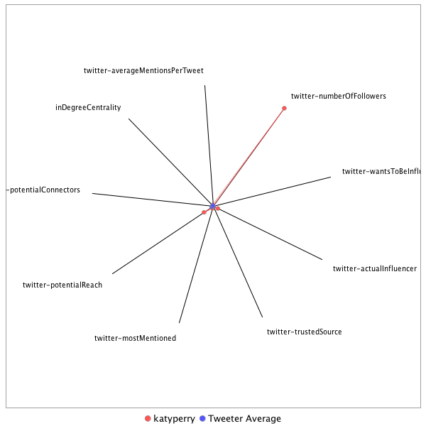

This tweeter has been identified as an influencer. Its target audience and hashtag and word usage are analyzed below.
Basic Statistics
Number of direct followers 9.98484e+07 The peak number of followers that the tweeter had during any time period. Number of retweeters 2 Number of agents that retweeted the key influencer. Number of secondary followers 17662 The sum of the followers of those who retweeted the key influencer. Measure Values of Other Influencers node versus Tweeter Average
This compares the measure values of the key influencer with the average values across all tweeters. For each measure line, the center-point means zero and the end-point means the maximum score across all tweeters.

Where was the influencer?
The agent is not recorded as being in any locations. Either he tweeted without geo-tags or we have no information about the tweets he sent.
The agent and its resenders are not recorded as being in any locations. Either they tweeted without geo-tags, or we have no information about the tweets they sent.
What hashtags did the influencer use?
This displays the top ranked hashtags that the influencer and its retweeters used.
Rank hashtag Count 1 BREAKING 87 2 ge2017 73 3 fox5dc 63 4 GrenfellTower 28 5 tomorrowspaperstoday 26 6 bbcpapers 19 7 Genius 18 8 onthisday 18 9 5at630 17 10 ParisAgreement 17 11 bbcelection 17 12 9News 15 13 AskForbes 15 14 ComeyTestimony 15 15 TheFinal5 15 16 RockTheRed 14 17 ComeyDay 13 18 wizceltics 12 19 Explorer 11 20 GlobalGoals 11 21 NoCrimeWave 11 22 AVRforAll 10 23 TreeFacts 10 24 WHA70 10 25 econarchive 10 26 dcfamily 9 27 travel 9 28 Breakthrough 8 29 ICYMI 8 30 Manchester 8 31 DailyShowLibrary 7 32 ManchesterArena 7 33 MemorialDay 7 34 SaveOurOcean 7 35 SessionsHearing 7 36 SgtPepper50 7 37 TNYarchive 7 38 WorldOceansDay 7 39 YourShot 7 40 cjreform 7 41 photography 7 42 pod 7 43 Caps 6 44 CapsPens 6 45 CongressionalBaseballGame 6 46 DC 6 47 HellOnEarth 6 48 LinkedInTopCompanies 6 49 NatGeoFest 6 50 NewAstronauts 6 51 StanleyCup 6 52 StateOfNASA 6 53 TonyAwards2017 6 54 YearMillion 6 55 jointogether 6 56 AmazonAfflink 5 57 ComeyHearings 5 58 FinsburyPark 5 59 MarkusLupertz 5 60 PESummit 5 61 PKDay 5 62 SmithsonianPride 5 63 WeStandTogether 5 64 WorldEnvironmentDay 5 65 WorldTurtleDay 5 66 traveltips 5 67 yemen 5 68 BeforeTheFlood 4 69 CavsCeltics 4 70 ChasingGenius 4 71 EarlyMomentsMatter 4 72 FOX5PromParty 4 73 Factoftheday 4 74 JamesComey 4 75 Leadership 4 76 LondonBridge 4 77 NoChildLabour 4 78 PhilandoCastile 4 79 SouthSudan 4 80 UPDATE 4 81 cholera 4 82 sepsis 4 83 sponsored 4 84 tree 4 85 wwdc2017 4 86 AVRAct 3 87 Anatolia 3 88 BBCDebate 3 89 BoroughMarket 3 90 Celeb100 3 91 Comey 3 92 ComeyFiring 3 93 Dragon 3 94 FathersDay 3 95 ForbesGamechangers 3 96 ForestFacts 3 97 Game7 3 98 GameTwo 3 99 Iceland 3 100 Jazz 3 Tweet List
This displays all of the tweets of the influencer ordered from earliest to latest. Click on a tweet to see its status in Twitter.
Number Tweet ID Date Message 1 873201640181972992 2017-06-09 11:34:28-04 https://t.co/LSIyAkUK9s 2 866788728651513857 2017-05-22 18:51:51-04 Praying for everyone at @ArianaGrande's show